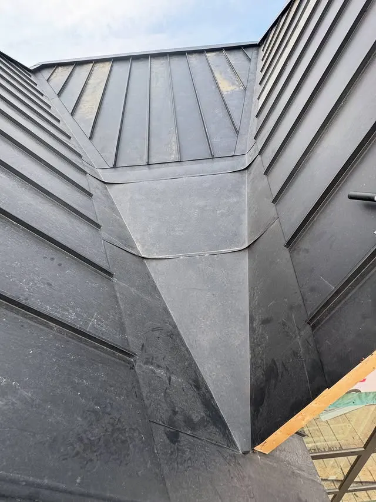
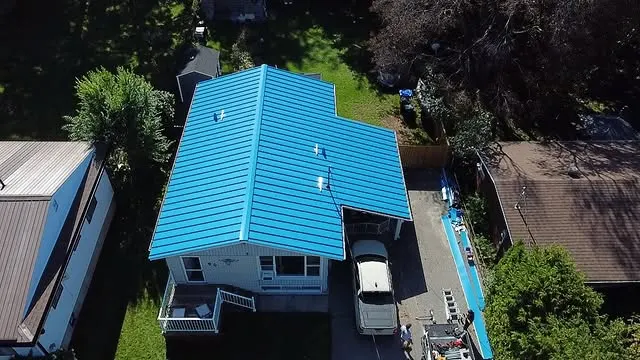
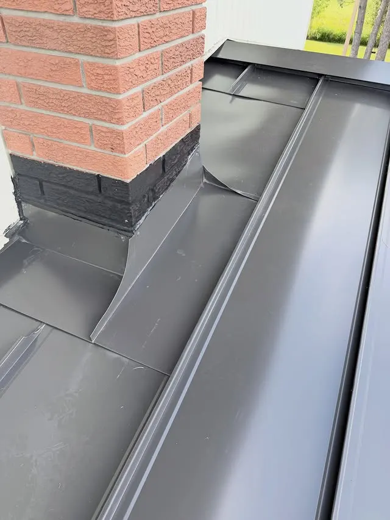
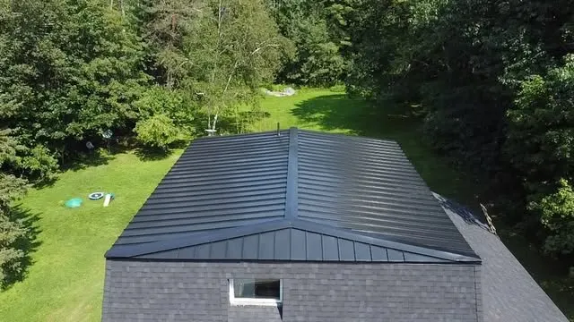
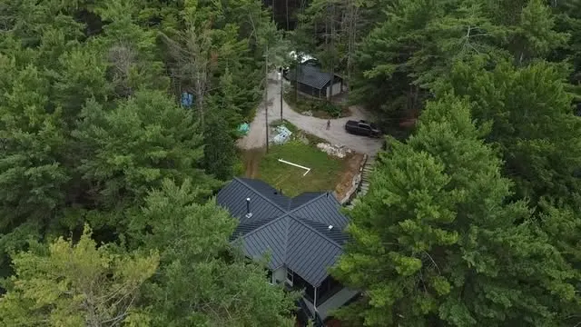
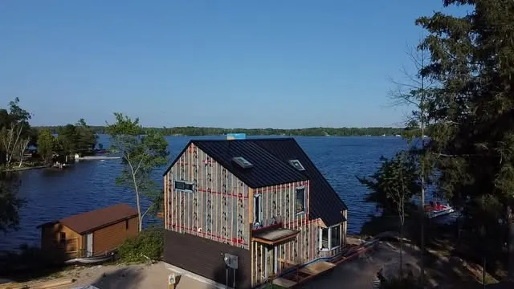

01
Metal Roofing
Metal roofs, including the standing-seam work featured across the feed.
Roofing — Toronto, Ontario, Canada
Sky Forge Roofing works in metal, shingles, flat roofing and standing seam. This page shows finished roofing from the team's own Instagram — no stock photos, no invented projects.
Enquire via Instagram DM
Latest work — 13 October 2026
The team's most recent post (13 October 2026) is a 12-slide carousel of a completed black standing-seam metal roof, tagged Mono, Ontario. It is the clearest single example of the standing-seam work on the feed — clean lines, full roof, photographed start to finish.
What they do
The services below are the ones Sky Forge Roofing shows on its Instagram. No prices are listed here — enquiries currently go through Instagram DM, and any quote would come from the business itself.
01
Metal roofs, including the standing-seam work featured across the feed.
02
Shingle roofing, as listed among the team's services.
03
Flat roofing, as listed among the team's services.
04
Standing-seam metal roofing — including the completed black roof posted 13 October 2026.
Finished work
Every photo below is the business's own Instagram post, linked to its original. Captions on the feed are hashtag-only, so no project locations, prices or client details are claimed here beyond what the posts themselves show.





Why a website helps here: right now the bio links are only two personal Instagram accounts, with no booking link — so every enquiry has to come through DM. A simple site like this lets a homeowner see the finished work, the four services and how to get in touch, without digging through a feed.
Get in touch
No phone number, email address or booking link is published for this business in the verified facts — so this preview links only to what exists: the Instagram profile. A finished site would add the business's own contact details once they provide them.
Message @sky_forge_roofing on Instagram